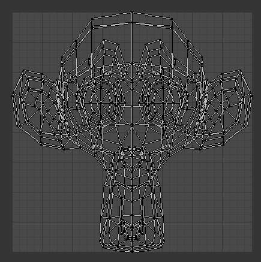
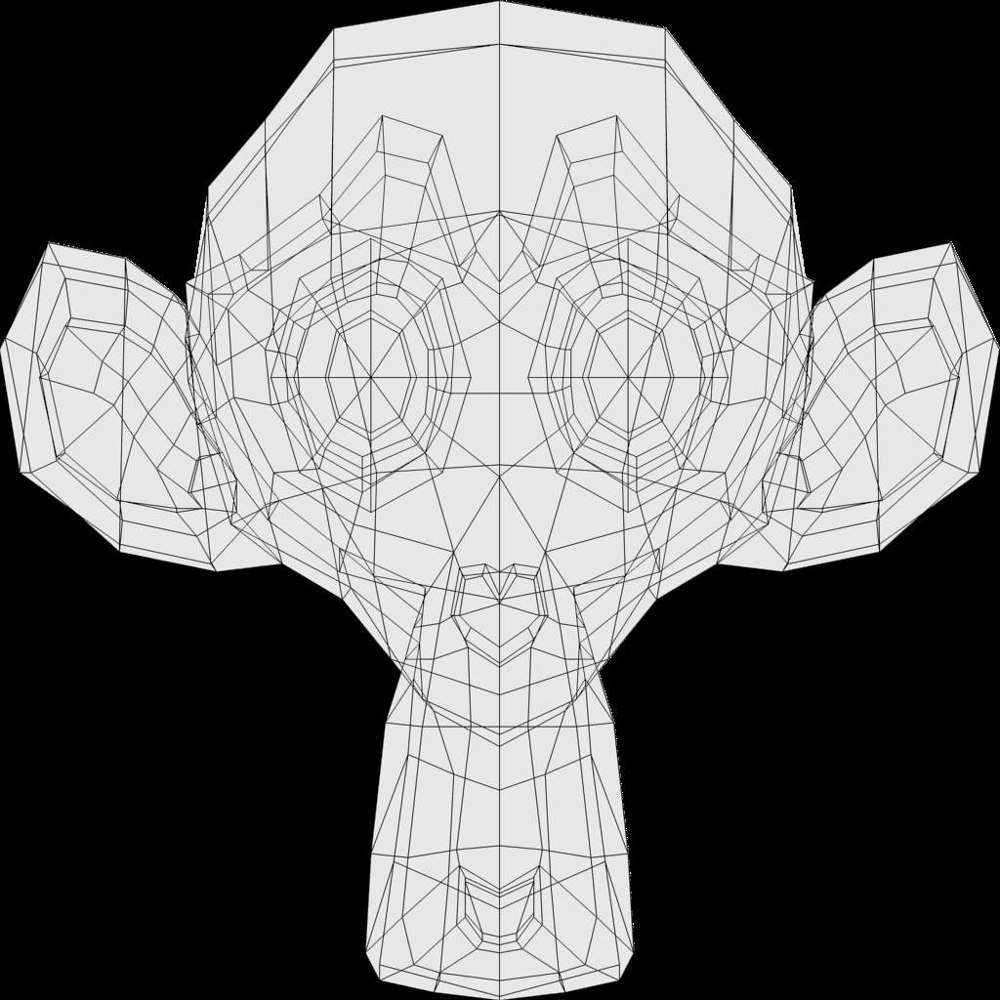
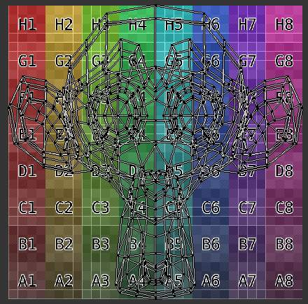
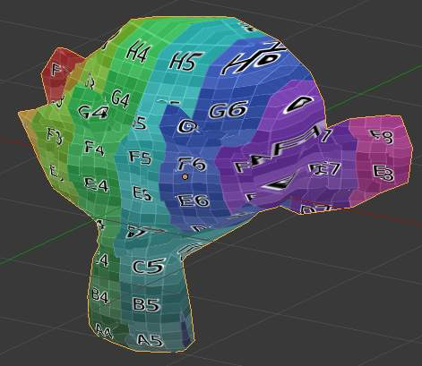

Applying Textures¶
Sooner or later, you may want to use an image texture on your model. If you are using an external application, you need to know where on the mesh you are painting. You may also need to test your UV mapping with a test image. This section covers how to export an outline of your UV map, and how to load images into the UV/图像 editor.
Exporting UV Layout 图像¶
As a way of communicating to an artist who is painting your UV Texture for you,
Blender has a tool called Save UV Face Layout
(located in the UV/图像编辑器, )
that saves an image as a Targa (.tga), EPS, or an SVG format for the object you have selected.
The image is an outline of the UV face mapping. Activating the tool brings up the 文件浏览器 with options for saving the layout:
Export Options.
- All UVs
- if disabled, then only the UV faces selected will be outlined
- Modified
- Export UVs from the modified mesh.
- Format
- Select the type of image file to save (
.png,.eps,.svg) - Size
- select the size of the image in pixels. The image be square.
- Fill Opacity
- Set the opacity of the fill
The image will be lines defining the UV edges that are within the image area of the UV mapping area. Edges outside the boundary, even if selected, will not be shown in the saved graphic.
The artist will use this as a transparent layer in their paint program as a guide when painting your texture. The example below shows Blender in the background, and the Gimp working on the texture, using the saved layout as a guide. Note that targa format supports the Alpha channel, so you can paint transparent areas of the mesh.
For using images as textures, see the page on 图像 Textures

A UV Layout in the UV/图像编辑器. |

A UV Layout in an 图像编辑器. |
{kind=link}
{kind=link}
Applying Textures to UVs¶
The UV/图像编辑器 allows you to map textures directly to the mesh faces. The 3D视图 editor shows you the object being textured. If you set this editor into Textured viewport shading, you will immediately see any changes made in the UV/图像 and this editor, and vice versa.
You can edit and load images, and even play a game in the Blender 游戏引擎 with UV textures for characters and object, without a material, and still see them in the 3D视图. This is because no real rendering is taking place; it is all just viewport shading. If you were to apply an image to UVs then render, the texture would not show up by default
To render an image however, you must
- create a Material for the object, and
- tell Blender to use the UV Textures on faces when rendering.
To create a Material, you have to click Add New Material in the Shading context.
There are two ways to tell Blender to use the UV Texture when rendering: the Proper way and the Quick Way:
Use UV Coordinates¶
A texture setup to map using its UV coordinates.
In the Texture channel panel, Add a New Texture and define the texture as an image and load the image you want to use. In the Mapping section, choose UV from the Coordinates menu, and select the UV layer to use.
Make sure it is mapped to Color in the Influence section as well (it will be mapped to Color by default, and the UV Texture is named “UVTex” by default). If the image has an alpha channel and you want to use it, click “UseAlpha” in the Map 图像 panel.
Full details of using 图像 textures are on the 图像 Textures page.
Note
Material is Required for 渲染ing
You can perform UV Texturing on a mesh within Blender without assigning a material, and you will even see it in your 3D视图 in textured viewport mode. However, when you render, you will just get a default gray if the object does not have a Material assigned. You will get a black if you do not load an image. If you do not create a texture that uses the image, or enable Face Texture, your object will render according to the procedural material settings.
Face Textures¶
The Material panel with activated Face Textures button.
An alternate way is to set up a Face Textures Material as shown. To do so,
with the Properties editor displayed, press F5 to display the Shader Buttons.
In the Properties editor, Material settings, click Add New material.
On the Options panel, enable Face Textures. This way is quick, but bypasses the normal rendering system for fast results, but results which do not respect transparency and proper shading.
Loading and Saving 图像s¶
In the UV/图像 editor, you can assign certain faces certain textures. To do so, first you need an image to work with. In the 图像 Menu you can open an image file with the 文件浏览器. If you have images in the file already, that you want to use, click the Browse button in the Header, or make a new texture by clicking the New button.
In a team environment, or if you are using an external paint program to edit the image while the blend-file is active, and the file is updated and re-saved, use the UV/图像编辑器 to it and see the latest and greatest in Blender. Also, use Reload if you have mapped more faces to an image, and the 3D视图 will be updated with the latest image mapping back to faces.
If you move the image file, Blender may not be able to find it, and you will have to it. Use this option to map a UV layout to a different image altogether.
Replacing the active 图像¶
Recall that each face gets coordinates and a link to an image.
To map a face to a different image, simply select that face (or faces) and use the UV/图像
Editor 图像 menu to Replace the current image with an existing file
(such as a JPG or PNG file).
New 图像s¶
{kind=link}
The new 图像 pop-up menu.
When you select New 图像 you are presented with several options. This Generated image can also be modified afterward in the Properties Panel:
- 图像 Name
- Set the name if the generated image
- Width and Height
- Set the size if the image in pixels
- Color
- Sets the default fill color if creating a blank image.
- Alpha
- Adds an alpha channel to the image
- Generated Type
The type of image to generate:
- UV Grid
- Creates a checkerboard pattern with a colored + in each square.
- Color Grid
- Creates a UV Test Grid, which is useful for testing how UVs have been mapped, and to reduce stretching. There are two types available, which can be set after the image has been created.
- Blank
- Generates a blank image of the specified color.
- 32 bit
- Creates a 32 bit image. This is a larger file size, but holds much more color information than the standard 8 bit image. For close ups and large gradients, it may be better to use a 32 bit image.
Using the Test Grid¶
Use the UV Test Grid option to check for undue stretching or distortion of faces. If your image is a base uniform pattern and you want the application of that image to your model to look like cloth, you do not want any stretching (unless you want the cloth to look like spandex).

The test grid applied to the UV’s. |

A preview of the texture on the geometry. |
{kind=link}
{kind=link}
When you render, the mesh will have the test grid as its colors, and the UV Texture will be the size image you specified. You can save the UV image using the menu.
图像 设置¶
When an image has been loaded or created in the UV/图像 editor, an additional section appears in the Properties Panel. The first row of buttons allow you to:
- Browse for an image
- Change the image name
- Set as Fake User
- Create a New 图像
- Open an image
- Unlink Data-Block
Select the image type in the Source menu. Each has different options:
- Generated
Generates a new image:
Width and Height of image in pixels
- Blank
- Creates a Blank image
- UV grid
- Creates a checkerboard pattern with colored plus symbols in each square.
- Color Grid
- Creates a more complex colored grid with letters and numbers denoting locations in the grid.
- File
Use for loading image files:
- Fields
- Use if image is made of fields. You can set it to use Upper First or Lower First
- Premultiply
- Converts RGB from key alpha to premultiplied alpha.
- Movie and Sequence
- Frames
- Set the number of frames to use
- Start
- Set the starting frame of the movie/sequence
- Offset
- Offset the number of frame used in the animation
- Fields
- Set the number fields per rendered frame to use(2 fields is 1 frame)
- Auto Refresh
- Always refresh images on frame changes.
- Cyclic
- Cycle the images in a movie/sequence.
Saving 图像s¶
图像s can be saved to external files if they were created or edited in Blender with tools in
the 图像 menu. If images are already files, use the Save command
Alt-S. You can also Save As F3
if the image was generated or you want to save as a different name.
Using Save as Copy, F3 will save the file to a specified name,
but will keep the old one open in the 图像 editor.
See also
Modifying your 图像 Texture¶
To modify your new Texture, you can:
- 渲染 Bake an image based on how the mesh looks
- The 渲染 Bake feature provides several tools to replace the current image based on a render of Vertex Paint colors, Normals (bumps), Procedural materials, textures and lighting, and ambient occlusion.
- Paint using Texture Paint.
- Use the UV/图像编辑器 menu . Then start painting your mesh with
- Use external software to create an image
- Using your favorite image painting program, you could use an exported UV layout to create a texture. Then save your changes, and back in Blender, use the menu command to load it as your UV image for the mesh in Face Select Mode for the desired (and active) UV Texture layer. Using the Edit Externally tool in the 图像 menu, Blender will open an image editor, as specified in the 用户首选项 and load in the image to be edited.
- Use the “projection painting” feature of recent versions of Blender
- Use the Bake uV-Textures to Vertex Colors add-on to create an image from vertex colors
- Some combination of the above.
The first three options, (UV Painter, 渲染 Bake, and Texture Baker) replace the image with an image that they create. Texture paint and external software can be used to add or enhance the image. Regardless of which method you use, ultimately you must either
- save your texture in a separate image file (for example
JPGfor colors,PNGwith RGBA for alpha), - pack the image inside the blend-file (UV/图像编辑器 ),
- or do both.
The advantage to saving as a separate file is that you can easily switch textures just by copying other image files over it, and you can use external editing programs to work on it. The advantage of packing is that your whole project is kept in the blend-file, and that you only have to manage one file.
You can invert the colors of an image by selecting the Invert menu. in the 图像 menu